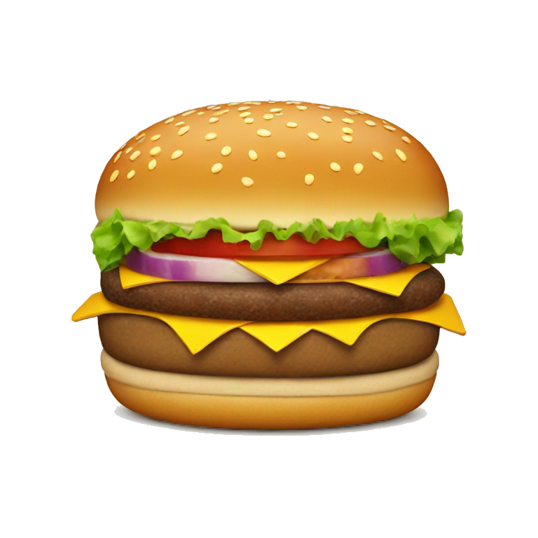

Can I Ask a Question?
choose any...


choose any...


shooo....
Coz the thoughts na pinipilit niya lang ispin na, “It’s just happy crush”, “She can control her feelings”, ”Hindi sya mafafall”, “And she’ll wait nalang baka infatuated feeeling lang yon” - yes she waited one month - is that too short to know if her feelings was not infatuated? And now she made this shit to finally confess her feelings she has rn for almost two months already. Yes and I’m talking to myself. I’m not expecting any good, positive response for this, I just want to express my feelings before this yr end.